25 Trees
These builders draw a tree or use one: a dendrogram of a clustering or a hierarchy, a node-link tree, a heatmap ordered by clustering, edges bundled along a tree, and sequences as rings. Use them for clusterings and hierarchies. Each returns an ordinary plot map; the Shared options chapter documents the tree options they pass on.
(ns reference.builders-trees
(:require [fastmath.ml.clustering :as cl]
[fastmath.stats :as stats]
[cljplot2.core :as plot]
[cljplot2.data.tree :as tree]
[cljplot2.describe :as describe]
[notebook-utils :as nu]))Data: Motor Trend car road tests (1974), R datasets package mtcars (Henderson & Velleman 1981); licence: Part of R (GPL-2 | GPL-3).
(def mtcars (take 16 (nu/dataset :mtcars)))| model | mpg | cyl | disp | hp | drat | wt | qsec | vs | am | gear | carb |
|---|---|---|---|---|---|---|---|---|---|---|---|
| Mazda RX4 | 21 | 6 | 160 | 110 | 3.9 | 2.62 | 16.46 | 0 | 1 | 4 | 4 |
| Mazda RX4 Wag | 21 | 6 | 160 | 110 | 3.9 | 2.875 | 17.02 | 0 | 1 | 4 | 4 |
| Datsun 710 | 22.8 | 4 | 108 | 93 | 3.85 | 2.32 | 18.61 | 1 | 1 | 4 | 1 |
| Hornet 4 Drive | 21.4 | 6 | 258 | 110 | 3.08 | 3.215 | 19.44 | 1 | 0 | 3 | 1 |
| Hornet Sportabout | 18.7 | 8 | 360 | 175 | 3.15 | 3.44 | 17.02 | 0 | 0 | 3 | 2 |
| Valiant | 18.1 | 6 | 225 | 105 | 2.76 | 3.46 | 20.22 | 1 | 0 | 3 | 1 |
| Duster 360 | 14.3 | 8 | 360 | 245 | 3.21 | 3.57 | 15.84 | 0 | 0 | 3 | 4 |
| Merc 240D | 24.4 | 4 | 146.7 | 62 | 3.69 | 3.19 | 20 | 1 | 0 | 4 | 2 |
| Merc 230 | 22.8 | 4 | 140.8 | 95 | 3.92 | 3.15 | 22.9 | 1 | 0 | 4 | 2 |
| Merc 280 | 19.2 | 6 | 167.6 | 123 | 3.92 | 3.44 | 18.3 | 1 | 0 | 4 | 4 |
| Merc 280C | 17.8 | 6 | 167.6 | 123 | 3.92 | 3.44 | 18.9 | 1 | 0 | 4 | 4 |
| Merc 450SE | 16.4 | 8 | 275.8 | 180 | 3.07 | 4.07 | 17.4 | 0 | 0 | 3 | 3 |
| Merc 450SL | 17.3 | 8 | 275.8 | 180 | 3.07 | 3.73 | 17.6 | 0 | 0 | 3 | 3 |
| Merc 450SLC | 15.2 | 8 | 275.8 | 180 | 3.07 | 3.78 | 18 | 0 | 0 | 3 | 3 |
| Cadillac Fleetwood | 10.4 | 8 | 472 | 205 | 2.93 | 5.25 | 17.98 | 0 | 0 | 3 | 4 |
| Lincoln Continental | 10.4 | 8 | 460 | 215 | 3 | 5.424 | 17.82 | 0 | 0 | 3 | 4 |
(def variables [:mpg :disp :hp :drat :wt :qsec])The table below holds the cars’ variables as z-scores, a row vector per car; car-clustering clusters them with complete linkage (fastmath hclust):
(def standardized (apply mapv vector (map (fn [k] (stats/standardize (map k mtcars))) variables)))| value |
|---|
| [0.6750876206931093 -0.8010684219091876 -0.6554596090331999 1.1283722620337149 -1.1502784754134987 -1.1015230645561858] |
| [0.6750876206931093 -0.8010684219091876 -0.6554596090331999 1.1283722620337149 -0.838525042459661 -0.7741715999318604] |
| [1.1090725197101083 -1.2597353595104843 -0.9790258770132912 1.014968014593141 -1.517047220065073 0.15527273712649395] |
| [0.7715287093635531 0.06334234510864066 -0.6554596090331999 -0.7314573959917041 -0.4228537985212105 0.6404543721946926] |
| [0.1205513608380552 0.9630351842496456 0.5817055332436202 -0.5726914495749004 -0.14777724003252984 -0.7741715999318604] |
| [-0.024110272167610528 -0.2277347499075668 -0.7506261584391091 -1.4572445796113807 -0.12332599038909156 1.096408197921431] |
| [-0.9403006145368302 0.9630351842496456 1.9140372249263495 -0.43660635264621106 0.011155882649818772 -1.4639479003902616] |
| [1.4948368743918843 -0.9183813117187501 -1.5690584833299286 0.6520744227833027 -0.45341786057550826 0.967805836819018] |
| [1.1090725197101083 -0.9704223681004355 -0.9409592572509275 1.1737339610099446 -0.5023203598623848 2.663018778623563] |
| [0.2411027216761104 -0.734032484875152 -0.40802658057783586 1.1737339610099446 -0.14777724003252984 -0.02593968079054295] |
| [-0.09644108867044382 -0.734032484875152 -0.40802658057783586 1.1737339610099446 -0.14777724003252984 0.32479403130694806] |
| [-0.43398489901699894 0.2203475660567769 0.6768720826495295 -0.7541382454798196 0.6224371237357761 -0.5520402489367825] |
| [-0.21699244950849902 0.2203475660567769 0.6768720826495295 -0.7541382454798196 0.2067658797973251 -0.43512901157095013] |
| [-0.7233081650283313 0.2203475660567769 0.6768720826495295 -0.7541382454798196 0.26789400390592055 -0.20130653683928948] |
| [-1.880601229073661 1.9509332036985922 1.1527048296790756 -1.071670138313427 2.065060852698634 -0.2129976605758723] |
| [-1.880601229073661 1.8450869873290623 1.3430379284908942 -0.9129041918966233 2.277786724596547 -0.306526650468537] |
(def car-clustering (cl/hclust standardized {:method :complete}))(def car-names (mapv :model mtcars))The table below holds a small hierarchy of offices as rows of levels; the dendrograms, trees and edge bundles use it:
(def offices [{:region "Europe" :country "Poland" :city "Warsaw"} {:region "Europe" :country "Poland" :city "Krakow"}
{:region "Europe" :country "France" :city "Paris"} {:region "Europe" :country "France" :city "Lyon"}
{:region "Asia" :country "Japan" :city "Tokyo"} {:region "Asia" :country "Japan" :city "Osaka"}
{:region "Asia" :country "India" :city "Delhi"}])| region | country | city |
|---|---|---|
| Europe | Poland | Warsaw |
| Europe | Poland | Krakow |
| Europe | France | Paris |
| Europe | France | Lyon |
| Asia | Japan | Tokyo |
| Asia | Japan | Osaka |
| Asia | India | Delhi |
(def office-tree (tree/from-levels offices {:hierarchy [:region :country :city]}))The table below holds the cars’ z-scores as long rows, a row per car and variable; the clustered heatmaps use it:
(def car-scores (vec (for [[car row] (map vector car-names standardized) [k v] (map vector variables row)]
{:car car :variable (name k) :z v})))| car | variable | z |
|---|---|---|
| Mazda RX4 | mpg | 0.6750876206931093 |
| Mazda RX4 | disp | -0.8010684219091876 |
| Mazda RX4 | hp | -0.6554596090331999 |
| Mazda RX4 | drat | 1.1283722620337149 |
| Mazda RX4 | wt | -1.1502784754134987 |
| Mazda RX4 | qsec | -1.1015230645561858 |
| Mazda RX4 Wag | mpg | 0.6750876206931093 |
| Mazda RX4 Wag | disp | -0.8010684219091876 |
| Mazda RX4 Wag | hp | -0.6554596090331999 |
| Mazda RX4 Wag | drat | 1.1283722620337149 |
| Mazda RX4 Wag | wt | -0.838525042459661 |
| Mazda RX4 Wag | qsec | -0.7741715999318604 |
| Datsun 710 | mpg | 1.1090725197101083 |
| Datsun 710 | disp | -1.2597353595104843 |
| Datsun 710 | hp | -0.9790258770132912 |
| Datsun 710 | drat | 1.014968014593141 |
| Datsun 710 | wt | -1.517047220065073 |
| Datsun 710 | qsec | 0.15527273712649395 |
| Hornet 4 Drive | mpg | 0.7715287093635531 |
| Hornet 4 Drive | disp | 0.06334234510864066 |
| Hornet 4 Drive | hp | -0.6554596090331999 |
| Hornet 4 Drive | drat | -0.7314573959917041 |
| Hornet 4 Drive | wt | -0.4228537985212105 |
| Hornet 4 Drive | qsec | 0.6404543721946926 |
| Hornet Sportabout | mpg | 0.1205513608380552 |
| Hornet Sportabout | disp | 0.9630351842496456 |
| Hornet Sportabout | hp | 0.5817055332436202 |
| Hornet Sportabout | drat | -0.5726914495749004 |
| Hornet Sportabout | wt | -0.14777724003252984 |
| Hornet Sportabout | qsec | -0.7741715999318604 |
| Valiant | mpg | -0.024110272167610528 |
| Valiant | disp | -0.2277347499075668 |
| Valiant | hp | -0.7506261584391091 |
| Valiant | drat | -1.4572445796113807 |
| Valiant | wt | -0.12332599038909156 |
| Valiant | qsec | 1.096408197921431 |
| Duster 360 | mpg | -0.9403006145368302 |
| Duster 360 | disp | 0.9630351842496456 |
| Duster 360 | hp | 1.9140372249263495 |
| Duster 360 | drat | -0.43660635264621106 |
| Duster 360 | wt | 0.011155882649818772 |
| Duster 360 | qsec | -1.4639479003902616 |
| Merc 240D | mpg | 1.4948368743918843 |
| Merc 240D | disp | -0.9183813117187501 |
| Merc 240D | hp | -1.5690584833299286 |
| Merc 240D | drat | 0.6520744227833027 |
| Merc 240D | wt | -0.45341786057550826 |
| Merc 240D | qsec | 0.967805836819018 |
| Merc 230 | mpg | 1.1090725197101083 |
| Merc 230 | disp | -0.9704223681004355 |
| Merc 230 | hp | -0.9409592572509275 |
| Merc 230 | drat | 1.1737339610099446 |
| Merc 230 | wt | -0.5023203598623848 |
| Merc 230 | qsec | 2.663018778623563 |
| Merc 280 | mpg | 0.2411027216761104 |
| Merc 280 | disp | -0.734032484875152 |
| Merc 280 | hp | -0.40802658057783586 |
| Merc 280 | drat | 1.1737339610099446 |
| Merc 280 | wt | -0.14777724003252984 |
| Merc 280 | qsec | -0.02593968079054295 |
| Merc 280C | mpg | -0.09644108867044382 |
| Merc 280C | disp | -0.734032484875152 |
| Merc 280C | hp | -0.40802658057783586 |
| Merc 280C | drat | 1.1737339610099446 |
| Merc 280C | wt | -0.14777724003252984 |
| Merc 280C | qsec | 0.32479403130694806 |
| Merc 450SE | mpg | -0.43398489901699894 |
| Merc 450SE | disp | 0.2203475660567769 |
| Merc 450SE | hp | 0.6768720826495295 |
| Merc 450SE | drat | -0.7541382454798196 |
| Merc 450SE | wt | 0.6224371237357761 |
| Merc 450SE | qsec | -0.5520402489367825 |
| Merc 450SL | mpg | -0.21699244950849902 |
| Merc 450SL | disp | 0.2203475660567769 |
| Merc 450SL | hp | 0.6768720826495295 |
| Merc 450SL | drat | -0.7541382454798196 |
| Merc 450SL | wt | 0.2067658797973251 |
| Merc 450SL | qsec | -0.43512901157095013 |
| Merc 450SLC | mpg | -0.7233081650283313 |
| Merc 450SLC | disp | 0.2203475660567769 |
| Merc 450SLC | hp | 0.6768720826495295 |
| Merc 450SLC | drat | -0.7541382454798196 |
| Merc 450SLC | wt | 0.26789400390592055 |
| Merc 450SLC | qsec | -0.20130653683928948 |
| Cadillac Fleetwood | mpg | -1.880601229073661 |
| Cadillac Fleetwood | disp | 1.9509332036985922 |
| Cadillac Fleetwood | hp | 1.1527048296790756 |
| Cadillac Fleetwood | drat | -1.071670138313427 |
| Cadillac Fleetwood | wt | 2.065060852698634 |
| Cadillac Fleetwood | qsec | -0.2129976605758723 |
| Lincoln Continental | mpg | -1.880601229073661 |
| Lincoln Continental | disp | 1.8450869873290623 |
| Lincoln Continental | hp | 1.3430379284908942 |
| Lincoln Continental | drat | -0.9129041918966233 |
| Lincoln Continental | wt | 2.277786724596547 |
| Lincoln Continental | qsec | -0.306526650468537 |
The table below adds each car’s cylinders, transmission and horsepower and each variable’s kind; the annotated heatmaps use it:
(def annotated-scores (let [car-info (into {} (map (fn [r] [(:model r) r])) mtcars)]
(mapv (fn [{:keys [car variable] :as r}]
(assoc r :cylinders (str (:cyl (car-info car)))
:transmission (if (zero? (:am (car-info car))) "automatic" "manual")
:horsepower (:hp (car-info car))
:kind (if (#{"mpg" "qsec"} variable) "performance" "engine")))
car-scores)))| car | variable | z | cylinders | transmission | horsepower | kind |
|---|---|---|---|---|---|---|
| Mazda RX4 | mpg | 0.6750876206931093 | 6 | manual | 110 | performance |
| Mazda RX4 | disp | -0.8010684219091876 | 6 | manual | 110 | engine |
| Mazda RX4 | hp | -0.6554596090331999 | 6 | manual | 110 | engine |
| Mazda RX4 | drat | 1.1283722620337149 | 6 | manual | 110 | engine |
| Mazda RX4 | wt | -1.1502784754134987 | 6 | manual | 110 | engine |
| Mazda RX4 | qsec | -1.1015230645561858 | 6 | manual | 110 | performance |
| Mazda RX4 Wag | mpg | 0.6750876206931093 | 6 | manual | 110 | performance |
| Mazda RX4 Wag | disp | -0.8010684219091876 | 6 | manual | 110 | engine |
| Mazda RX4 Wag | hp | -0.6554596090331999 | 6 | manual | 110 | engine |
| Mazda RX4 Wag | drat | 1.1283722620337149 | 6 | manual | 110 | engine |
| Mazda RX4 Wag | wt | -0.838525042459661 | 6 | manual | 110 | engine |
| Mazda RX4 Wag | qsec | -0.7741715999318604 | 6 | manual | 110 | performance |
| Datsun 710 | mpg | 1.1090725197101083 | 4 | manual | 93 | performance |
| Datsun 710 | disp | -1.2597353595104843 | 4 | manual | 93 | engine |
| Datsun 710 | hp | -0.9790258770132912 | 4 | manual | 93 | engine |
| Datsun 710 | drat | 1.014968014593141 | 4 | manual | 93 | engine |
| Datsun 710 | wt | -1.517047220065073 | 4 | manual | 93 | engine |
| Datsun 710 | qsec | 0.15527273712649395 | 4 | manual | 93 | performance |
| Hornet 4 Drive | mpg | 0.7715287093635531 | 6 | automatic | 110 | performance |
| Hornet 4 Drive | disp | 0.06334234510864066 | 6 | automatic | 110 | engine |
| Hornet 4 Drive | hp | -0.6554596090331999 | 6 | automatic | 110 | engine |
| Hornet 4 Drive | drat | -0.7314573959917041 | 6 | automatic | 110 | engine |
| Hornet 4 Drive | wt | -0.4228537985212105 | 6 | automatic | 110 | engine |
| Hornet 4 Drive | qsec | 0.6404543721946926 | 6 | automatic | 110 | performance |
| Hornet Sportabout | mpg | 0.1205513608380552 | 8 | automatic | 175 | performance |
| Hornet Sportabout | disp | 0.9630351842496456 | 8 | automatic | 175 | engine |
| Hornet Sportabout | hp | 0.5817055332436202 | 8 | automatic | 175 | engine |
| Hornet Sportabout | drat | -0.5726914495749004 | 8 | automatic | 175 | engine |
| Hornet Sportabout | wt | -0.14777724003252984 | 8 | automatic | 175 | engine |
| Hornet Sportabout | qsec | -0.7741715999318604 | 8 | automatic | 175 | performance |
| Valiant | mpg | -0.024110272167610528 | 6 | automatic | 105 | performance |
| Valiant | disp | -0.2277347499075668 | 6 | automatic | 105 | engine |
| Valiant | hp | -0.7506261584391091 | 6 | automatic | 105 | engine |
| Valiant | drat | -1.4572445796113807 | 6 | automatic | 105 | engine |
| Valiant | wt | -0.12332599038909156 | 6 | automatic | 105 | engine |
| Valiant | qsec | 1.096408197921431 | 6 | automatic | 105 | performance |
| Duster 360 | mpg | -0.9403006145368302 | 8 | automatic | 245 | performance |
| Duster 360 | disp | 0.9630351842496456 | 8 | automatic | 245 | engine |
| Duster 360 | hp | 1.9140372249263495 | 8 | automatic | 245 | engine |
| Duster 360 | drat | -0.43660635264621106 | 8 | automatic | 245 | engine |
| Duster 360 | wt | 0.011155882649818772 | 8 | automatic | 245 | engine |
| Duster 360 | qsec | -1.4639479003902616 | 8 | automatic | 245 | performance |
| Merc 240D | mpg | 1.4948368743918843 | 4 | automatic | 62 | performance |
| Merc 240D | disp | -0.9183813117187501 | 4 | automatic | 62 | engine |
| Merc 240D | hp | -1.5690584833299286 | 4 | automatic | 62 | engine |
| Merc 240D | drat | 0.6520744227833027 | 4 | automatic | 62 | engine |
| Merc 240D | wt | -0.45341786057550826 | 4 | automatic | 62 | engine |
| Merc 240D | qsec | 0.967805836819018 | 4 | automatic | 62 | performance |
| Merc 230 | mpg | 1.1090725197101083 | 4 | automatic | 95 | performance |
| Merc 230 | disp | -0.9704223681004355 | 4 | automatic | 95 | engine |
| Merc 230 | hp | -0.9409592572509275 | 4 | automatic | 95 | engine |
| Merc 230 | drat | 1.1737339610099446 | 4 | automatic | 95 | engine |
| Merc 230 | wt | -0.5023203598623848 | 4 | automatic | 95 | engine |
| Merc 230 | qsec | 2.663018778623563 | 4 | automatic | 95 | performance |
| Merc 280 | mpg | 0.2411027216761104 | 6 | automatic | 123 | performance |
| Merc 280 | disp | -0.734032484875152 | 6 | automatic | 123 | engine |
| Merc 280 | hp | -0.40802658057783586 | 6 | automatic | 123 | engine |
| Merc 280 | drat | 1.1737339610099446 | 6 | automatic | 123 | engine |
| Merc 280 | wt | -0.14777724003252984 | 6 | automatic | 123 | engine |
| Merc 280 | qsec | -0.02593968079054295 | 6 | automatic | 123 | performance |
| Merc 280C | mpg | -0.09644108867044382 | 6 | automatic | 123 | performance |
| Merc 280C | disp | -0.734032484875152 | 6 | automatic | 123 | engine |
| Merc 280C | hp | -0.40802658057783586 | 6 | automatic | 123 | engine |
| Merc 280C | drat | 1.1737339610099446 | 6 | automatic | 123 | engine |
| Merc 280C | wt | -0.14777724003252984 | 6 | automatic | 123 | engine |
| Merc 280C | qsec | 0.32479403130694806 | 6 | automatic | 123 | performance |
| Merc 450SE | mpg | -0.43398489901699894 | 8 | automatic | 180 | performance |
| Merc 450SE | disp | 0.2203475660567769 | 8 | automatic | 180 | engine |
| Merc 450SE | hp | 0.6768720826495295 | 8 | automatic | 180 | engine |
| Merc 450SE | drat | -0.7541382454798196 | 8 | automatic | 180 | engine |
| Merc 450SE | wt | 0.6224371237357761 | 8 | automatic | 180 | engine |
| Merc 450SE | qsec | -0.5520402489367825 | 8 | automatic | 180 | performance |
| Merc 450SL | mpg | -0.21699244950849902 | 8 | automatic | 180 | performance |
| Merc 450SL | disp | 0.2203475660567769 | 8 | automatic | 180 | engine |
| Merc 450SL | hp | 0.6768720826495295 | 8 | automatic | 180 | engine |
| Merc 450SL | drat | -0.7541382454798196 | 8 | automatic | 180 | engine |
| Merc 450SL | wt | 0.2067658797973251 | 8 | automatic | 180 | engine |
| Merc 450SL | qsec | -0.43512901157095013 | 8 | automatic | 180 | performance |
| Merc 450SLC | mpg | -0.7233081650283313 | 8 | automatic | 180 | performance |
| Merc 450SLC | disp | 0.2203475660567769 | 8 | automatic | 180 | engine |
| Merc 450SLC | hp | 0.6768720826495295 | 8 | automatic | 180 | engine |
| Merc 450SLC | drat | -0.7541382454798196 | 8 | automatic | 180 | engine |
| Merc 450SLC | wt | 0.26789400390592055 | 8 | automatic | 180 | engine |
| Merc 450SLC | qsec | -0.20130653683928948 | 8 | automatic | 180 | performance |
| Cadillac Fleetwood | mpg | -1.880601229073661 | 8 | automatic | 205 | performance |
| Cadillac Fleetwood | disp | 1.9509332036985922 | 8 | automatic | 205 | engine |
| Cadillac Fleetwood | hp | 1.1527048296790756 | 8 | automatic | 205 | engine |
| Cadillac Fleetwood | drat | -1.071670138313427 | 8 | automatic | 205 | engine |
| Cadillac Fleetwood | wt | 2.065060852698634 | 8 | automatic | 205 | engine |
| Cadillac Fleetwood | qsec | -0.2129976605758723 | 8 | automatic | 205 | performance |
| Lincoln Continental | mpg | -1.880601229073661 | 8 | automatic | 215 | performance |
| Lincoln Continental | disp | 1.8450869873290623 | 8 | automatic | 215 | engine |
| Lincoln Continental | hp | 1.3430379284908942 | 8 | automatic | 215 | engine |
| Lincoln Continental | drat | -0.9129041918966233 | 8 | automatic | 215 | engine |
| Lincoln Continental | wt | 2.277786724596547 | 8 | automatic | 215 | engine |
| Lincoln Continental | qsec | -0.306526650468537 | 8 | automatic | 215 | performance |
The table below holds calls between the offices’ cities; the edge bundles use it:
(def calls [{:from "Warsaw" :to "Paris"} {:from "Warsaw" :to "Tokyo"} {:from "Krakow" :to "Lyon"}
{:from "Krakow" :to "Delhi"} {:from "Paris" :to "Osaka"} {:from "Lyon" :to "Tokyo"}
{:from "Tokyo" :to "Delhi"} {:from "Osaka" :to "Warsaw"} {:from "Delhi" :to "Paris"}])| from | to |
|---|---|
| Warsaw | Paris |
| Warsaw | Tokyo |
| Krakow | Lyon |
| Krakow | Delhi |
| Paris | Osaka |
| Lyon | Tokyo |
| Tokyo | Delhi |
| Osaka | Warsaw |
| Delhi | Paris |
The table below holds visits to a website as sequences of pages; the sequence sunbursts use it:
(def visits [{:sequence "home-search-product-end" :n 30} {:sequence "home-product-cart-end" :n 25}
{:sequence "home-search-end" :n 20} {:sequence "home-end" :n 15}
{:sequence "home-help-search-product-cart-end" :n 10} {:sequence "home-product-end" :n 18}])| sequence | n |
|---|---|
| home-search-product-end | 30 |
| home-product-cart-end | 25 |
| home-search-end | 20 |
| home-end | 15 |
| home-help-search-product-cart-end | 10 |
| home-product-end | 18 |
25.1 Dendrograms
plot/dendrogram draws a clustering (an hclust result) or a tree of levels or parents. It draws the branches at their merge heights and the leaves along one axis. Use it to show how observations join into clusters.
source– A fastmathhclustresult or a tree oftree/from-hclust,tree/from-levelsortree/from-parents.
These options name an hclust result’s leaves, turn the dendrogram, write leaf and group names and style the branches. The plot below cuts the cars’ clustering into 3 clusters:
(plot/render-image (plot/dendrogram car-clustering {:leaf-names car-names :k 3 :title "complete linkage, 3 clusters"})
{:width 900 :height 420})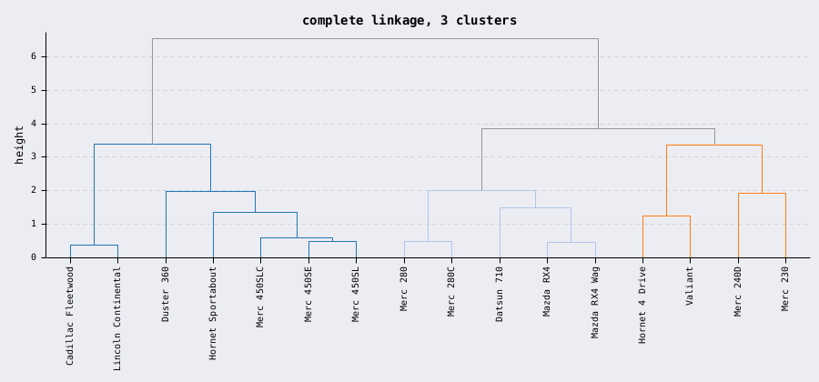
The left panel below turns the dendrogram horizontal with thicker red branches and no leaf names; the right one draws a hierarchy with its group names at their nodes:
(plot/render-image (plot/arrange [(plot/dendrogram car-clustering {:leaf-names car-names :horizontal true :labels false
:line-style {:color [200 60 40] :line-width 2}
:title ":horizontal, :labels false, :line-style"})
(plot/dendrogram office-tree {:horizontal false :group-labels true
:title "a hierarchy, :group-labels true"})]
{:columns 2})
{:width 1000 :height 400})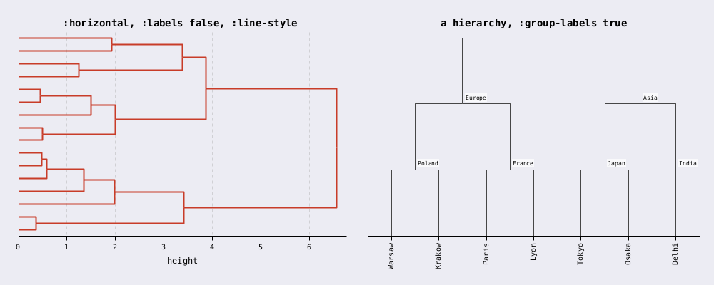
The branches draw in the theme style [:chart :dendrogram-branch] (a line style the clustered heatmap’s trees use too) and the group names in the text role :dendrogram-group-label:
[:theme :chart :dendrogram-branch], not options:color(default[70 70 70]) – The colour of the line; a mapped:colorwins.:line-width(default1) – The width of the line in pixels.:dash(default:none) – The dash style of the line; a mapped:dashwins.
The plot below draws thin blue branches through the theme:
(plot/render-image (plot/dendrogram car-clustering {:leaf-names car-names
:theme {:chart {:dendrogram-branch {:color [40 90 160] :line-width 0.6}}}})
{:width 700 :height 380})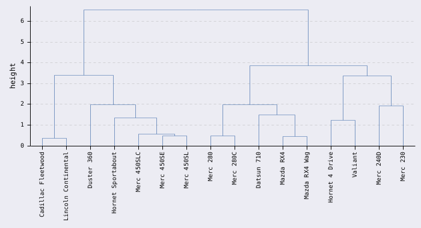
25.2 Node-link trees
plot/tree draws a point per node of a tree, links from parents to children and names beside the nodes. The layout options (Node-link tree layout) make it a tidy tree or a cluster, cartesian or circular. Use it to show a hierarchy’s structure.
source– A fastmathhclustresult or a tree oftree/from-hclust,tree/from-levelsortree/from-parents.
These options write node names, draw node points, map node aesthetics and style the nodes and links. The plot below draws the office tree:
(plot/render-image (plot/tree office-tree) {:width 600 :height 360})
The left panel below colours nodes by depth, enlarges them and dashes the links; the middle one draws only the links of a circular tree; the right one draws a clustering’s tree with names:
(plot/render-image (plot/arrange [(plot/tree office-tree {:mapping {:color #(str (:depth %))}
:node-style {:size 12}
:link-style {:dash :dashed :color [90 90 90]}
:title ":mapping, :node-style, :link-style"
:scales {:color {:legend false}}})
(plot/tree office-tree {:labels false :node-points false :circular true
:title ":circular true, no names or points"})
(plot/tree car-clustering {:leaf-names car-names :labels true :node-points true
:title "a clustering, :labels"})]
{:columns 3})
{:width 1000 :height 420})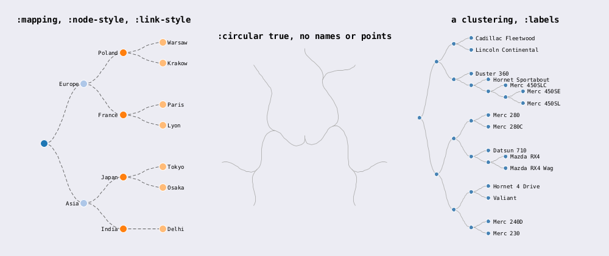
A node-link tree draws in theme styles: the nodes in [:chart :tree-node] (a scatter style), the links in [:chart :tree-link] (a line style) and the names in the text role :tree-label:
[:theme :chart :tree-node], not options:size(default7) – The point size in pixels; a mapped:sizewins.:color(default[0 114 178]) – The colour of the points (in a 3D cloud, of every mark); a mapped:colorwins.:stroke-color(default:white) – The colour of each point's outline.:stroke-width(default1) – The width of the outline in pixels;0draws no outline.:shape(default\O) – The shape of every point; a mapped:shapewins.:alpha– The opacity of every point (in a 3D cloud, of every mark) and its legend key; the outline keeps its own.
The plot below draws small dark nodes through the theme:
(plot/render-image (plot/tree office-tree {:theme {:chart {:tree-node {:size 5 :color [60 60 60] :stroke-color :none}}}})
{:width 600 :height 360})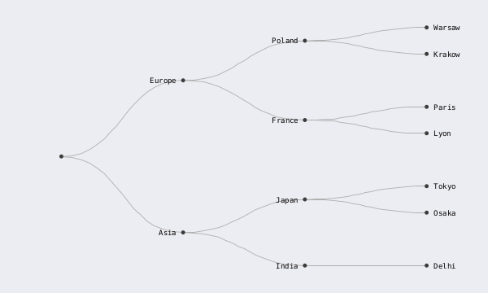
The links’ theme style has these keys; the plot below draws darker, thicker links and bold names through the theme:
[:theme :chart :tree-link], not options:color(default[176 176 176]) – The colour of the line; a mapped:colorwins.:line-width(default0.9) – The width of the line in pixels.:dash(default:none) – The dash style of the line; a mapped:dashwins.
(plot/render-image (plot/tree office-tree {:theme {:chart {:tree-link {:color [90 90 90] :line-width 2}}
:text {:tree-label {:font-style :bold}}}})
{:width 600 :height 360})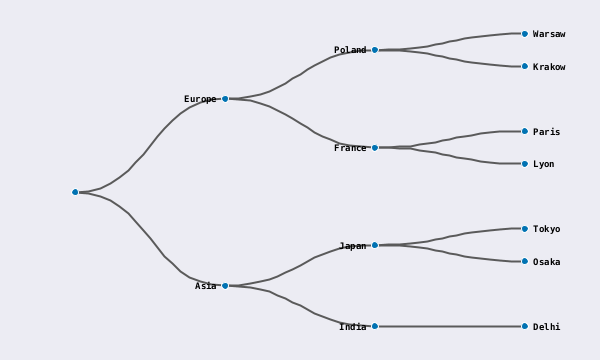
25.3 Clustered heatmaps
plot/clustered-heatmap draws a tile per row and column of long rows, coloured by a value. Hierarchical clustering orders the rows and the columns, and their dendrograms sit beside the tiles. Use it to find groups of similar rows and columns.
rows– Long rows, one per cell.Columns:- a row column – The cell's heatmap row, named by the option
:row. - a column column – The cell's heatmap column, named by the option
:col. - a value column – The cell's value, a finite number, named by the option
:value; every pair of a heatmap row and column needs one.
- a row column – The cell's heatmap row, named by the option
:row-tree or :col-tree is false.These options name the tile row, column and value, set the clustering, the trees and their size, and add annotation strips. The plot below draws the cars’ z-scores:
(plot/render-image (plot/clustered-heatmap car-scores {:row :car :col :variable :value :z
:scales {:color {:range :RColorBrewer/RdBu :midpoint 0
:reverse true :title "z-score"}}})
{:width 700 :height 500})
The next panels use other distances between rows and columns, with average linkage; they give different orders and trees:
(plot/render-image (plot/arrange [(plot/clustered-heatmap car-scores {:row :car :col :variable :value :z :method :average
:distance :manhattan :title ":distance :manhattan"
:scales {:color {:legend false}}})
(plot/clustered-heatmap car-scores {:row :car :col :variable :value :z :method :average
:distance :chebyshev :title ":distance :chebyshev"
:scales {:color {:legend false}}})
(plot/clustered-heatmap car-scores {:row :car :col :variable :value :z :method :average
:distance :canberra :title ":distance :canberra"
:scales {:color {:legend false}}})
(plot/clustered-heatmap car-scores {:row :car :col :variable :value :z :method :average
:distance :earth-movers
:title ":distance :earth-movers"
:scales {:color {:legend false}}})]
{:columns 2})
{:width 1000 :height 800})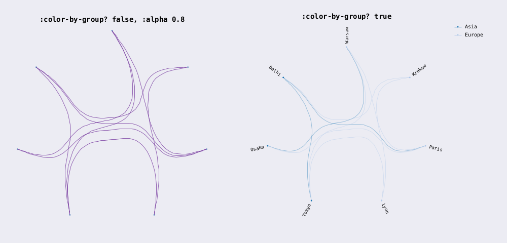
The left panel below draws only the rows’ tree, wider, and orders the columns without their tree; the right one uses Ward linkage and draws no trees, only the order:
(plot/render-image (plot/arrange [(plot/clustered-heatmap car-scores {:row :car :col :variable :value :z
:col-tree false :tree-size [0.35 0.2]
:title ":col-tree false, :tree-size [0.35 0.2]"
:scales {:color {:legend false}}})
(plot/clustered-heatmap car-scores {:row :car :col :variable :value :z :method :ward
:row-tree false :col-tree false
:title ":method :ward, no trees"})]
{:columns 2 :widths [1 1.15]})
{:width 1000 :height 450})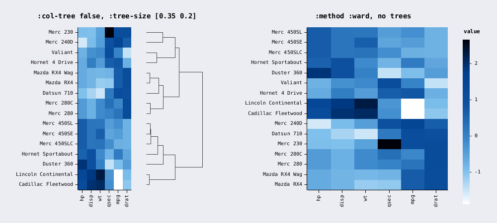
Annotations, as pheatmap’s annotation_row and annotation_col, draw a strip per annotation along the tile rows or columns, named beside it, and add its legend to the legend column. The rows of one tile row or column must agree on the value. With annotations the legend column spans every row by default, so the value legend stretches over the room the annotations’ legends leave. The plot below annotates the cars by cylinders and transmission and the variables by kind:
(plot/render-image (plot/clustered-heatmap annotated-scores
{:row :car :col :variable :value :z
:row-annotations [[:cylinders {:range :set2}] [:transmission {:range ["#999999" "#e08214"]}]]
:col-annotations [[:kind {:range :set1 :title "variable kind"}]]
:annotation-size 14 :legend-span :matrix
:scales {:color {:range :RColorBrewer/RdBu :midpoint 0 :reverse true :title "z-score"}}})
{:width 800 :height 600})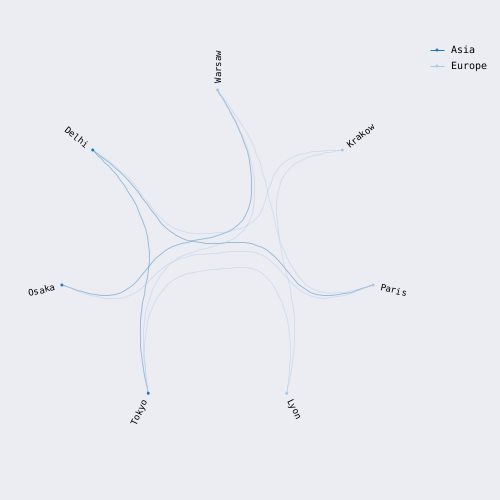
An annotation is coloured as any colour mapping: categorical values get a palette, numbers a gradient. The plot below annotates horsepower with a colour bar and keeps the legend cell beside the tiles’ row only:
(plot/render-image (plot/clustered-heatmap annotated-scores
{:row :car :col :variable :value :z
:row-annotations [[:horsepower {:range :viridis/magma}] [:cylinders nil]]
:legend-span :row
:scales {:color {:range :RColorBrewer/RdBu :midpoint 0 :reverse true :title "z-score"}}})
{:width 800 :height 500})
25.4 Edge bundles
plot/bundle draws edges between the leaves of a tree around a circle, each edge bent along the tree path between its ends. Use it for many links between the members of a hierarchy.
edges– Edge rows between leaves of the tree.Columns::from– The source leaf: atree/from-parentsnode's:id, else a leaf's:name; the option:fromnames another column.:to– The target leaf; the option:tonames another column.
leaf-tree– A tree oftree/from-hclust,tree/from-levelsortree/from-parentswhose leaves the edges join.
These options set the edges’ opacity and colours and the leaf names. The plot below bundles calls between the office tree’s cities:
(plot/render-image (plot/bundle calls office-tree {}) {:width 500 :height 500})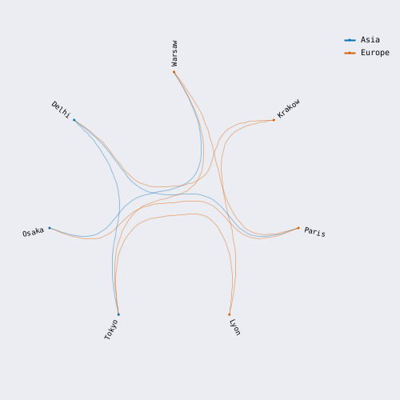
The left panel below draws one edge colour, more opaque, without leaf names; the right one colours by group (the default) and fades the edges:
(plot/render-image (plot/arrange [(plot/bundle calls office-tree {:color-by :none :edge-color [120 60 160]
:alpha 0.8 :labels false
:title ":color-by :none, :alpha 0.8"})
(plot/bundle calls office-tree {:alpha 0.15 :title ":alpha 0.15"})]
{:columns 2 :widths [1 1.3]})
{:width 1000 :height 480})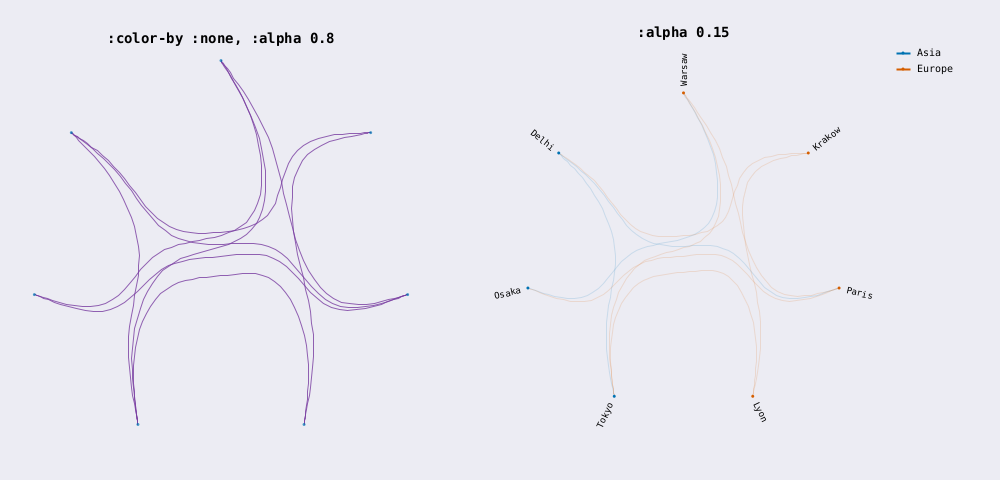
An edge bundle draws in theme styles: the edges in [:chart :bundle-edge] (a line style) and the leaves in [:chart :bundle-leaf] (a scatter style):
[:theme :chart :bundle-edge], not options:color(default[0 114 178]) – The colour of the line; a mapped:colorwins.:line-width(default1) – The width of the line in pixels.:dash(default:none) – The dash style of the line; a mapped:dashwins.
The plot below draws thicker edges through the theme:
(plot/render-image (plot/bundle calls office-tree {:theme {:chart {:bundle-edge {:line-width 2.5}}}})
{:width 500 :height 500})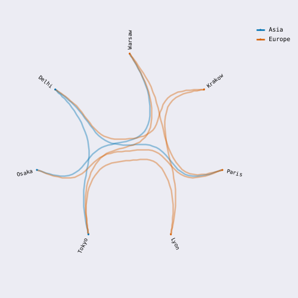
The leaves’ theme style has these keys; the plot below draws large square leaves through the theme:
[:theme :chart :bundle-leaf], not options:size(default3) – The point size in pixels; a mapped:sizewins.:color(default[0 114 178 180]) – The colour of the points (in a 3D cloud, of every mark); a mapped:colorwins.:stroke-color(default:none) – The colour of each point's outline.:stroke-width(default1) – The width of the outline in pixels;0draws no outline.:shape(default\O) – The shape of every point; a mapped:shapewins.:alpha– The opacity of every point (in a 3D cloud, of every mark) and its legend key; the outline keeps its own.
(plot/render-image (plot/bundle calls office-tree {:theme {:chart {:bundle-leaf {:size 8 :shape \s}}}})
{:width 500 :height 500})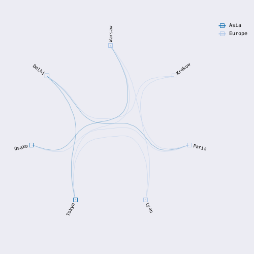
25.5 Sequence sunbursts
plot/sequences draws sequences of steps as rings from the centre. A step keeps its name’s colour wherever it occurs, and the end of a sequence is a step of its own. Use it to show the paths through a process, e.g. visits to a website.
rows– One sequence per row.Columns::sequence– The sequence: a string of steps joined by:separator, or a sequence of steps; the option:sequencenames another column.- a weight column – The row's weight, named by the option
:value; optional.
These options set the centre hole, the step names and the end marker. The plot below draws the website visits:
(plot/render-image (plot/sequences visits {:value :n}) {:width 500 :height 450})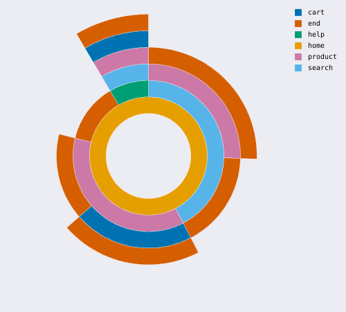
The next plot draws a smaller hole, which leaves more room for the rings, and the step names in the cells where they fit; the larger image gives them room:
(plot/render-image (plot/sequences visits {:value :n :inner-radius 0.1 :labels true :title ":inner-radius 0.1, :labels true"})
{:width 700 :height 600})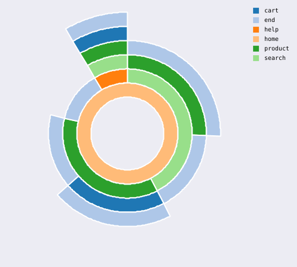
With :keep-end false the end is not a step of its own, so sequences that end leave their group’s grey remainder:
(plot/render-image (plot/sequences visits {:value :n :keep-end false :title ":keep-end false"})
{:width 550 :height 450})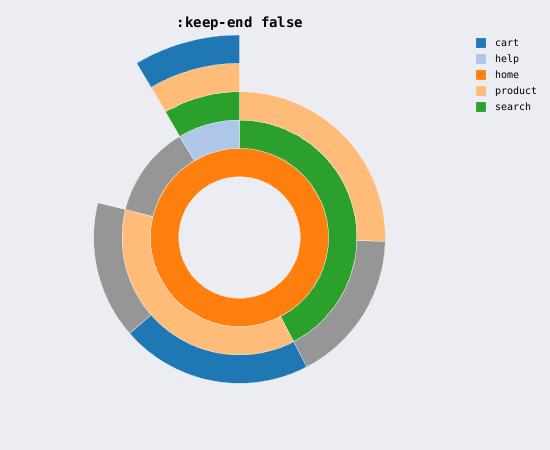
The cells draw in the theme style [:chart :sequences-cell] (a partition style):
[:theme :chart :sequences-cell], not options:stroke-color(default:white) – The outline colour of the cells.:stroke-width(default0.3) – The outline width of the cells in pixels;0draws no outline.:pattern(default:solid) – The pattern drawn over the fill; a mapped:patternwins.:pattern-color(default:darker) – The colour of the pattern's ink.
The plot below draws thick white cell outlines through the theme:
(plot/render-image (plot/sequences visits {:value :n :theme {:chart {:sequences-cell {:stroke-width 2}}}})
{:width 500 :height 450})source: notebooks/reference/builders_trees.clj